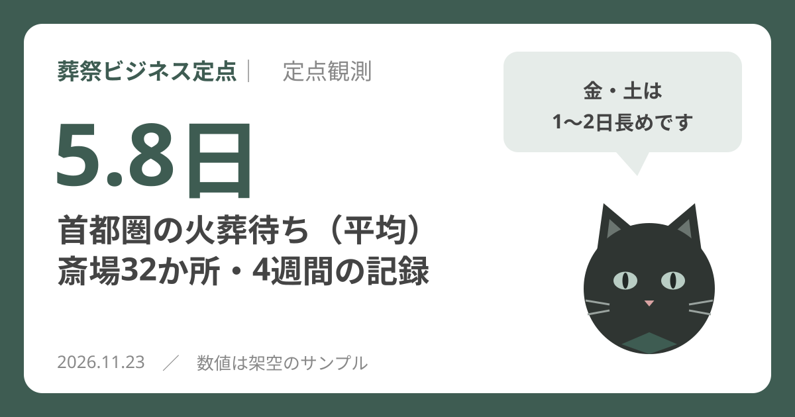

首都圏の火葬待ちは平均5.8日、昨年同時期より0.9日長く
本紙が斎場32か所の予約枠を4週間記録
本紙は10月27日から11月21日までの4週間、首都圏の公営・民営の斎場32か所について、予約システムに表示される空き枠を毎朝9時に記録しました。亡くなった日から火葬できる日までの待ち日数は平均5.8日で、昨年同時期の4.9日より0.9日長くなりました。
曜日・地域別の待ち日数（10月27日〜11月21日）
地域別では東京23区西部が6.9日で最も長く、埼玉南部が4.5日で最も短くなりました。全体の平均5.8日は地域ごとの平均を斎場の数で重みづけして出しています。
| 地域 | 斎場数 | 月 | 火 | 水 | 木 | 金 | 土 | 日 | 平均 |
|---|---|---|---|---|---|---|---|---|---|
| 東京23区東部 | 8 | 6.4 | 6.1 | 5.2 | 6.0 | 7.3 | 7.8 | 6.6 | 6.5 |
| 東京23区西部 | 7 | 6.8 | 6.3 | 6.0 | 6.2 | 7.6 | 8.1 | 7.0 | 6.9 |
| 多摩地域 | 6 | 4.9 | 4.6 | 4.4 | 4.8 | 5.5 | 6.2 | 5.0 | 5.1 |
| 神奈川東部 | 6 | 5.3 | 5.0 | 4.7 | 5.1 | 6.0 | 6.7 | 5.4 | 5.5 |
| 埼玉南部 | 5 | 4.5 | 3.9 | 3.8 | 4.2 | 5.0 | 5.6 | 4.6 | 4.5 |
金曜・土曜に亡くなると待ち日数が長い
どの地域でも、金曜と土曜に亡くなった場合の待ち日数が長くなっていました。月〜木曜の平均と比べると、金曜は0.8〜1.4日、土曜は1.5〜1.9日長くなっています。
待つ日数に応じて安置の費用が増える
本紙が首都圏の葬儀社12社に聞いたところ、安置料とドライアイス代を合わせた1日あたりの費用は平均1万2千円でした。最も低い社で9千円、最も高い社で1万6千円です。斎場32か所の料金表では、市外の住民が使う場合の火葬料は市内料金より平均3万8千円高くなっていました。23区内で安置施設を運営する6社に聞いたところ、調査期間中の安置室の稼働率は平均92%でした。
安置料とドライアイス代（1日あたり）
平均1万2千円葬儀社12社の回答。9千円〜1万6千円市外料金と市内料金の差
平均3万8千円斎場32か所の公開料金表から算出来月以降の見通し
昨年の記録では、待ち日数が最も長くなったのは1月中旬で、23区西部で最長11日でした。本紙は1月末まで同じ方法で記録を続け、毎週月曜に表を更新します。
この記事のファクト
- 首都圏の斎場32か所の火葬待ちは平均5.8日。昨年同時期は4.9日出典：本紙の定点記録（2026年10月27日〜11月21日、毎朝9時）、昨年分は2025年10月28日〜11月22日の同じ記録
- 月〜木曜の平均と比べ、金曜は0.8〜1.4日、土曜は1.5〜1.9日長い出典：同記録（地域別の曜日平均から算出）
- 安置料とドライアイス代は1日あたり平均1万2千円（9千円〜1万6千円）出典：本紙による首都圏の葬儀社12社への聞き取り（2026年11月）
- 市外の住民の火葬料は市内料金より平均3万8千円高い出典：斎場32か所の公開料金表（2026年11月1日時点）
- 23区内の安置施設の稼働率は平均92%出典：本紙による安置施設運営6社への聞き取り（調査期間中の平均）
待つ日数と1日あたりの費用を、最初の見積もりで示す
平均5.8日という数字は、ご遺族にとってはお別れまでの日々がそれだけ続くということでもあります。待つ日数そのものは葬儀社だけでは短くできません。ただ、待つあいだの負担は、伝え方で軽くできるとわたしは考えています。
個人的には、最初の見積もりの段階で、その地域と曜日の待ち日数の目安と、1日あたりの安置費用（平均1万2千円）を書き添えるのがよいと思います。市外の斎場を使えば早まる場合は、差額（平均3万8千円）と比べられる形で示します。ご遺族が先の見通しを持てれば、急な追加の費用に戸惑うことも減るはずです。
※見解はファクトをもとにした本紙キャラクターの意見です。特定の斎場・事業者の評価ではありません。
- 1月中旬の待ち日数が、昨年の最長11日（23区西部）を上回るかどうか
- 安置施設の稼働率（現在92%）と、新規開設の動き
今週の制度・行政の動き
・ある市が斎場の炉を2基増やす計画を公表（2028年稼働予定）・葬儀の見積書の記載ルールに関する業界団体のガイドライン改定案、意見募集が12月10日まで